Section 9.3: Estimating Population Means
Learning Objectives
1.Construct and interpret a confidence interval for a population mean.
2.Determine the sample size necessary to estimate a population mean within a specific margin of error.
The Margin of Error for Population Means
Suppose you wanted to estimate the mean salary for high school teachers in the United States. You would likely collect sample data, and use the sample mean to approximate the true population mean As we saw in section 9.1, if the data are approximately normal, then we can find a margin of error and create a confidence interval of the form . The process is very similar to the process for finding a confidence interval for a population proportion that we used in section 9.2. The point estimate is now and the margin of error will have a different formula. But the process is similar.

Important Point!
If the distribution of sample means is approximately bell-shaped, then the confidence interval for the true population mean will have the form , or ( , ), where the limits are:
Lower limit =
Upper Limit =
You might recall from section 8.3 that since we don’t know the population standard deviation , we don’t know the standard deviation for the distribution of sample means . This is important because it means we can’t use a normal distribution to calculate the margin of error.
Fortunately for us, William Gossett found a way around this problem using the students’ t distribution. As we saw in section 8.3, the student’s t-distribution looks very similar to a normal distribution, but due to the uncertainty in the standard deviation, the distribution is a little flatter and a little wider, more so when the sample size is small.
Student’s t-distribution
Assume that samples of size n are randomly selected from a population of numerical values, and sample mean and sample standard deviation s are calculated from each sample. If the population is approximately normal, or if , then the distribution
is a t-distribution with n – 1 degrees of freedom.
When using technology, you will sometimes be asked for the degrees of freedom, and other times you will need only the sample size. The technology you use will specify which you need.
Recall that the t-distribution curve looks a lot like a normal curve except it has slightly wider tails. As you can see in figure 9.16, as the degrees of freedom increase, the t-distribution gets closer to the shape of a normal curve.
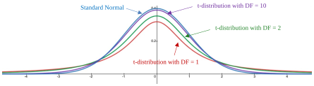
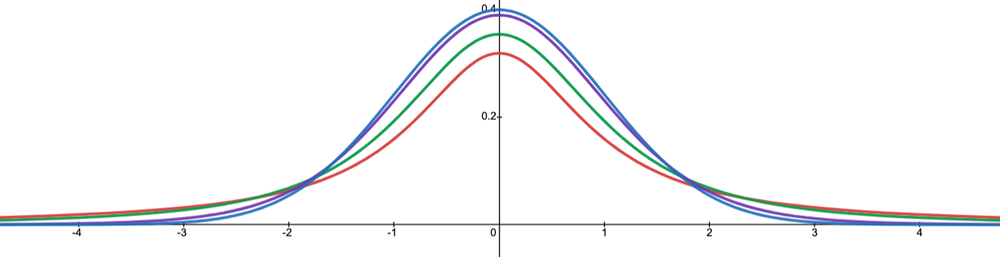
Figure 9.16: Student’s t-distribution for 1, 2, and 10 degrees of freedom, and standard normal distribution.
To find the margin of error, we again use as the “complement” of the confidence level. This time, we will use the Student’s t-distribution to find the critical values , so that the left and right tail will each contain area equal to . For example, if we want a 95% confidence interval, , and the area of each tail will be .
Definition 1
The value of is the t-score from the t-distribution with n – 1 degrees of freedom such that the area in the right tail is . See figure 9.17.
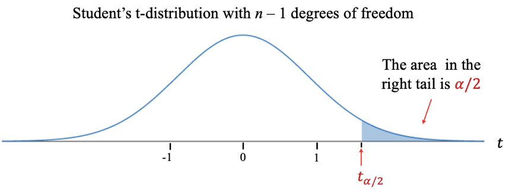
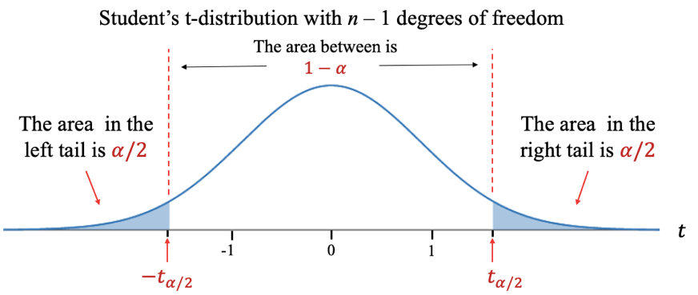
Figure 9.17: Definition of and the confidence interval with area in each tail.
We will use probability from the t-distribution to find the appropriate that gives us the confidence level we need. Then, we will use , the sample mean, and the sample standard deviation, to compute the margin of error.
Margin of Error for Estimating a Population Mean
Assume we are estimating a population mean with a sample of size n with sample mean and sample standard deviations s. If the parent population is approximately normal, or the sample size is , then the confidence interval for the population mean is , where the margin of error is:
The value of is determined by the t-distribution with n – 1 degrees of freedom.
Note: is called the standard error of the mean, and it can be found in most technology output.
Example 1: Finding
Find for each level of confidence and sample size.
a)95% confidence interval and sample size n = 22.
b)90% confidence interval and sample size n = 16.
Solution:a)Open STATBELT Utility and select Calculators → T-distribution Calculator. Under “Find a value from an area,” choose “P(T > _) = a.” Type in the degrees of freedom, DF = , and the area in one of the two tails, In this case we want a 95% confidence interval, so , and . Type 0.025 for the area a.
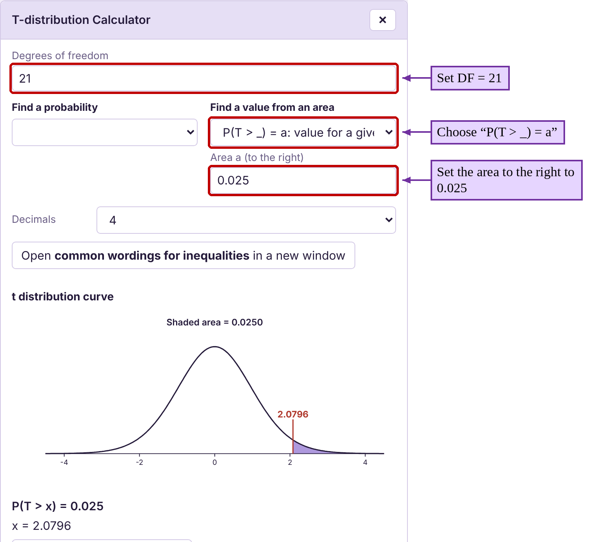
The value for is 2.0796. This is what we will use in the margin of error formula.
Note that with some technology, such as STATBELT, you can find the two values for a middle area and type in the confidence level directly. This will give the same result. In STATBELT, you would select Calculators → T-distribution Calculator, then choose “P(_ < T < _) = a” under “Find a value from an area.” Type in the level of confidence you want, 0.95, as the middle area. The result will give both the negative and positive values of t that have combined in the two tails. In this case, we have , so the value of is 2.0796, as before.
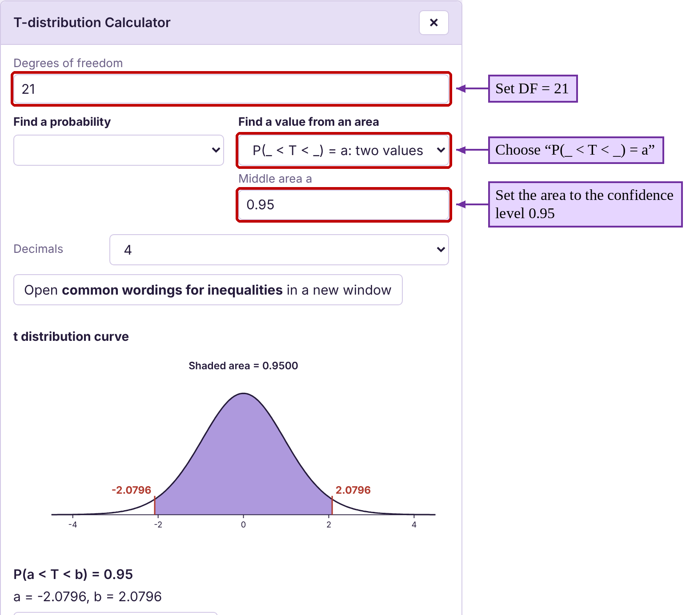
b)Follow the same path as in part (a): Calculators → T-distribution Calculator, and choose “P(T > _) = a.” Type in the degrees of freedom, DF = , and the area in one of the two tails, In this case we want a 90% confidence interval, so , and . Type 0.05 for the area a, and set Decimals to 5.
To create a 90% confidence interval using a sample of size n = 16, the value for is 1.75305.
Confidence Intervals for Population Means
The process for finding the confidence interval for a population mean follows the same steps we used to estimate a population proportion. We find the point estimate , compute a margin of error E, then state the interval in the form .
Confidence Interval for a Population Mean Process
Assume we are estimating a population mean using a random sample of size n. If the parent population is approximately normal, or the sample size is use the following steps to find the confidence interval.
1.Calculate the sample mean and the sample standard deviation s if they are not given.
2.Identify the confidence level and the area in one tail, .
3.Use the t-distribution with DF = n – 1 to find .
4.Calculate the margin of error
5.The lower and upper limits of the interval are
Lower limit:
Upper limit:
Always state the level of confidence AND the lower and upper limits of the interval.
The process for finding a confidence interval for a population mean can also be viewed as a flowchart, shown in figure 9.18.
Given a random sample of size n, identify the sample mean , sample standard deviation s, and confidence level.
Make sure that the parent distribution is approximately normal or the sample size .
Find the value of for the level of confidence you want.
Calculate the margin of error
Compute lower and upper limits of the confidence interval:
Lower limit:
Upper limit:
“We are ____% confident that the population mean is between (LL) and (UL)”
Figure 9.18: Flowchart for the process of finding a confidence interval for a population mean.
Example 2: Finding a Confidence Interval for a Population Mean
A random sample of 40 patients tested for HDL cholesterol had a mean level of 50.7 milligrams per deciliter (mg/dL) and standard deviation 11.85 mg/dL. Find the 95% confidence interval for the population mean HDL cholesterol level for the population of patients.
Given a random sample of size n, identify the sample mean , sample standard deviation s, and confidence level.
Solution:Step 1:We have sample data with n = 40 and and s = 11.85. We are asked to find the 95% confidence interval.
Make sure that the parent distribution is approximately normal or the sample size .
Step 2:Since n = 40 , the distribution of sample means follows a normal distribution.
Find the value of for the level of confidence you want.
Step 3:How you approach this step will depend on the technology you use. Here we will find using the area in the right tail, which is for a 95% confidence interval.
The sample size is , so DF . Using STATBELT, follow Calculators → T-distribution Calculator, then choose “P(T > _) = a,” type in DF = 39, and set the area equal to 0.025 (with 5 decimals). We get .
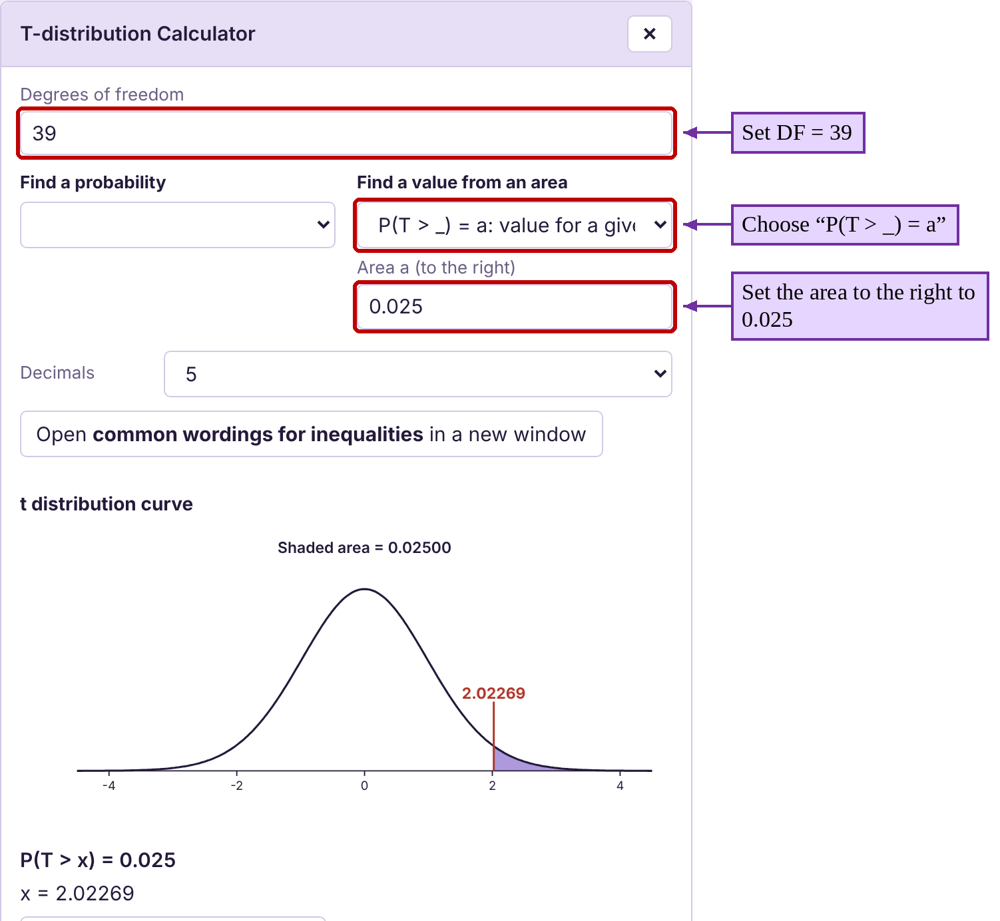
Calculate the margin of error
Step 4:Compute the margin of error.
Compute lower and upper limits of the confidence interval:
Lower limit:
Upper limit:
“We are ____% confident that the population mean is between (LL) and (UL)”
Step 5:Compute the lower and upper limits of the confidence interval. Using the point estimate and margin of error (rounded to same number of decimal places as the standard deviation),
Conclusion: Based on this sample, we are 95% confident that the population mean cholesterol level for patients is between 46.91 and 54.49 mg/dL.
 Tip!
Tip!If the technology you use only computes cumulative probability, or the area on the left, then you can find , which is the complement of . The value of will be the same. Or you can find . The answer will be negative, but due to symmetry, it will be the opposite of .
Once again, some technologies will allow us to input summary data or raw data and will compute the lower and upper limits of the confidence intervals for us. We will need to know to use the t-distribution, but the shortcut will save us from having to identify and calculate the margin of error ourselves.
STATBELT Utility- Confidence Intervals for Means
Open STATBELT Utility and select Tests → Inference for Means → One sample → Estimate a mean. (Yes, this is the same menu we used for hypothesis testing.)
1.Under “Where is the data?” choose “Summarized data.” Type the sample mean, the sample standard deviation, and the sample size n.
2.Type the confidence level you want, such as 95%. Leave the procedure set to “t interval (σ unknown).”
3.The confidence interval appears as soon as you type.
The output gives you the sample size, sample mean, sample standard deviation, standard error, confidence level, critical value t*, degrees of freedom, margin of error, lower limit, and upper limit of the confidence interval. Remember to always state the level of confidence AND the lower and upper limits of the interval when you report the confidence interval.
If you are working from raw data, choose “Column data from the main spreadsheet” instead. Instead of Step 1 above, check the column that contains the numerical data. Steps 2 and 3 are the same.
Example 3: Finding a Confidence Interval for a Population Mean Using STATBELT
Redo example 2 using STATBELT. A random sample of 40 patients tested for HDL cholesterol had a mean level of 50.7 milligrams per deciliter (mg/dL) and standard deviation 11.85 mg/dL. Find the 95% confidence interval for the population mean HDL cholesterol level.
Solution:Open STATBELT Utility and select Tests → Inference for Means → One sample → Estimate a mean.
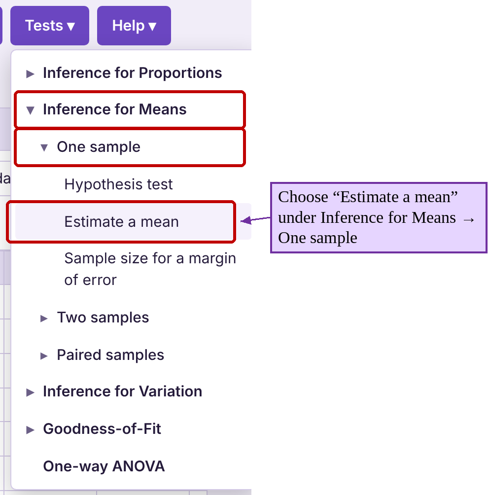
Under “Where is the data?” choose “Summarized data.” Type in the sample mean 50.7, sample standard deviation 11.85, and the sample size 40.
Type 95% for the confidence level. (You can also type 95 or 0.95.)
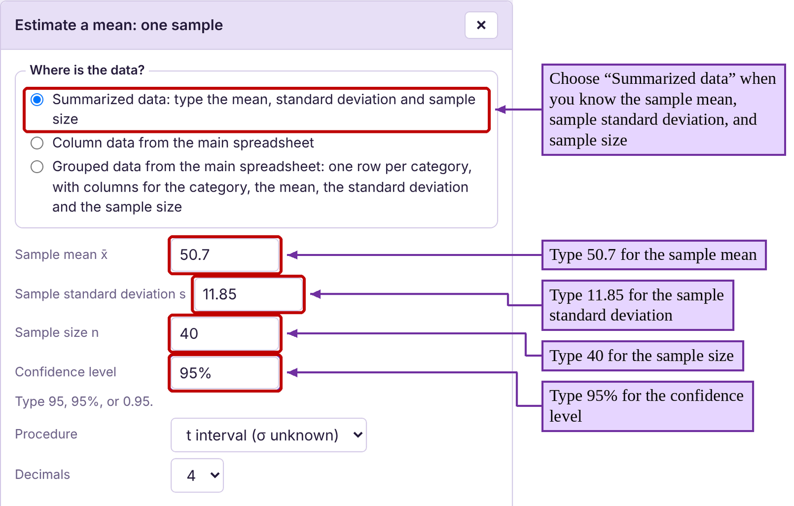
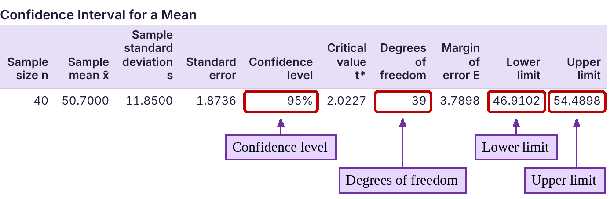
The output gives you the sample mean (which we already knew) along with the standard error of the mean, the critical value t*, the degrees of freedom, the margin of error, the lower limit of the interval, and the upper limit. It remains for us to write the conclusion. We round the interval off at two decimal places, which is one more decimal place than the sample mean had, and equal to the number of decimal places of the standard deviation.
Conclusion: Based on this sample, we are 95% confident that the population mean cholesterol level for patients is between 46.91 and 54.49 mg/dL. This is the same conclusion as example 2.
Example 4: Confidence Interval for a Mean Using STATBELT
An independent researcher wanted to estimate the cost of all course materials (textbooks, electronic subscriptions, materials fees, etc.) for college courses. They obtained a sample of 48 randomly selected students with a sample mean course materials cost of $339 and standard deviation $207. Find the 99% confidence interval for the mean cost of course materials for a college course.
Solution:Open STATBELT Utility and select Tests → Inference for Means → One sample → Estimate a mean. We know the sample mean is , the sample standard deviation is s = 207, and the sample size is n = 48. Choose “Summarized data” and type these values in. Type 99% for a 99% confidence interval.
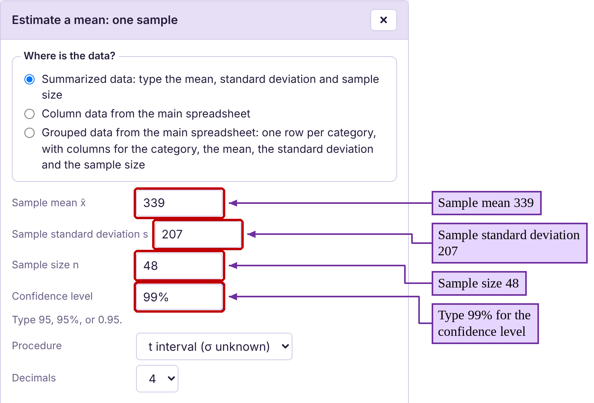
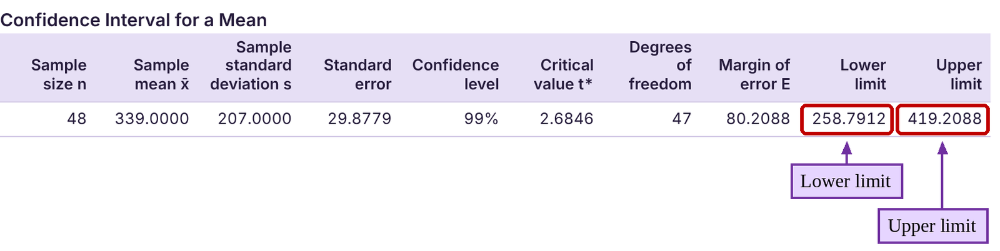
STATBELT gives us a lower limit of 258.79 and an upper limit of 419.21, both rounded off as cents because these are dollar amounts.
Conclusion: Based on this sample, we are 99% confident that the mean cost of course materials per college course is between $258.79 and $419.21.
Example 5: Confidence Intervals from Raw Data
Sample grade point averages of 48 high school students who also attended college are shown in Table 4. Find the 95% confidence intervals for high school grade point average and the 95% confidence interval for college grade point average. You can open the GPA data (opens in a new tab) in STATBELT (download CSV).
Table 4: High School and College Grade Point Averages | |||||||
|---|---|---|---|---|---|---|---|
HS GPA | College GPA | HS GPA | College GPA | HS GPA | College GPA | HS GPA | College GPA |
3.87 | 3.89 | 2.26 | 1.92 | 3.72 | 2.7 | 2.1 | 2.04 |
4 | 3.9 | 3.27 | 3.1 | 2.33 | 3.05 | 2.48 | 2.7 |
2.87 | 2 | 3.11 | 2.9 | 2.93 | 2.33 | 3.74 | 4.06 |
2.99 | 3 | 1.83 | 2 | 3.66 | 3 | 1.49 | 2.23 |
3.22 | 2.83 | 3.84 | 3.43 | 3.49 | 2.4 | 1.89 | 2 |
3.32 | 2.67 | 4 | 4 | 3.44 | 3 | 3.31 | 3 |
2.67 | 2.38 | 3.43 | 3 | 2.49 | 2.25 | 4 | 3.7 |
4 | 3.83 | 3.31 | 3.3 | 2.7 | 2.9 | 3.75 | 2.64 |
3.54 | 3.5 | 2.97 | 3.2 | 3.95 | 3.33 | 3.5 | 3 |
2.63 | 2.6 | 4 | 3.7 | 3.72 | 3.9 | 2.07 | 2.67 |
2.62 | 2.54 | 2.12 | 2.9 | 4 | 3.9 | 3.42 | 3.2 |
4 | 3 | 3.03 | 3 | 4 | 3.54 | 4 | 3.92 |
Solution:First, open the GPA data in STATBELT Utility from the link. The columns are already named HS GPA and College GPA.
To find the confidence interval for high school GPA, select Tests → Inference for Means → One sample → Estimate a mean, and choose “Column data from the main spreadsheet.” Check “HS GPA” only and type 95% for the confidence level.
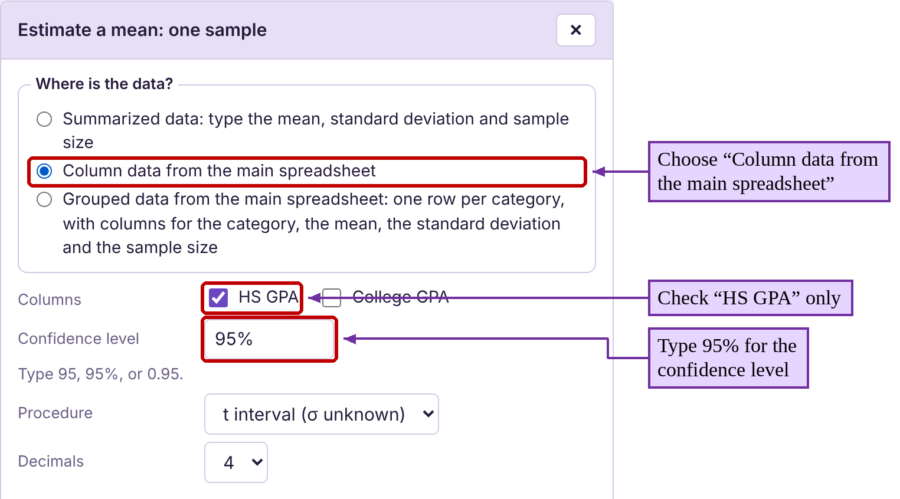
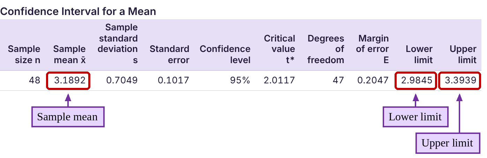
STATBELT gives us the sample mean 3.19 with lower limit 2.98 and upper limit 3.39. So, we are 95% confident that the mean high school grade point average is between 2.98 and 3.39.
To find the 95% confidence interval for college grade point average, we repeat the process. This time, check “College GPA” only. All the other steps are identical.
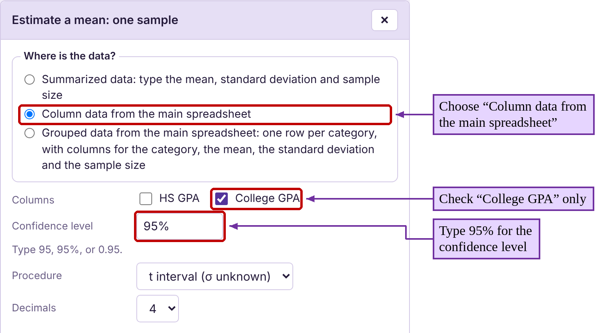
For the college students, STATBELT gives us the sample mean 3.00 with lower limit 2.83 and upper limit 3.18. So, we are 95% confident that the mean college grade point average is between 2.83 and 3.18. See figure 9.19 for the illustration of the confidence intervals. Notice that the two confidence intervals overlap, indicating that there may be no difference between the mean GPA for high school or college students. For example, both high school and college GPA could be 3.15, since that value is within each of the 95% confidence intervals. We will study situations like this where we have two different samples in much greater detail in chapter 10.
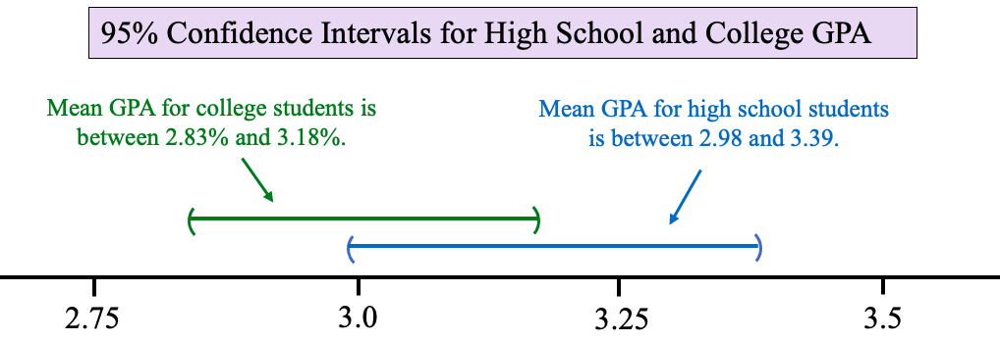
Figure 9.19: The 95% confidence intervals for high school and college GPA overlap.
Estimating Sample Size
Prior to beginning a study, we would like to know how large of a sample we will need to have a margin of error that is reasonable. Again, the larger the sample size is, the smaller the margin of error will be. But how large do you need? It is a complicated question because we use the t-distribution to compute the margin of error, which requires degrees of freedom, which are derived from sample size, which we don’t know. To get around this problem, we use the standard normal distribution in place of the t-distribution and recognize that the sample size formula will give us a slight underestimate.
Sample Size Formula for Confidence Intervals for Population Means
Assume we wish to create a confidence interval for a mean with a specific margin of error E. To find the sample size, use the sample size formula
1.Use the desired level of confidence to find from Table 2 in section 9.2, reproduced below.
2.Use E = the desired margin of error.
3.Use a known sample standard deviation or an estimate s.
Plug in the values of , E, and s (or ). This formula is the margin of error formula solved for n. It gives you the minimum sample size needed. You always need to round it UP to the next greatest whole number.
Table 2: Common Confidence Intervals and Critical Values | |||
|---|---|---|---|
To be this confident | Area in each tail | ||
99% | 1% = 0.01 | 0.005 | 2.576 |
95% | 5% = 0.05 | 0.025 | 1.96 |
90% | 10% = 0.10 | 0.05 | 1.645 |
Example 6: What Sample Size is Required?
What sample size is required to give a 95% confidence interval for the average annual income of a Richmond, CA, resident with error less than $1000? Assume that the standard deviation is approximately $20,000.
Photo by Alexander Grey (opens in a new tab) on Unsplash (opens in a new tab)
Solution:Here, we simply plug in the values we are given into the sample size formula. For a 95% CI, we use . The standard deviation is , and the largest error we can tolerate is .
In this case we would need to obtain data from at least 1537 residents to obtain a confidence interval for the mean annual income with an error less than $1000. Since that is a lot of data to collect, and data collection is expensive, we might decide to allow a larger margin of error. You can check that if you increase your acceptable margin of error to $2000, you will only need about 385 in your sample.
Important Point!
When you use any sample size formula, you must always round the sample size UP to the next highest whole number! You will NEVER round down!
Tip!Technology can be used to estimate sample size. To find sample size with STATBELT, select Tests → Inference for Means → One sample → Sample size for a margin of error. Type the margin of error itself, not the width of the interval. STATBELT uses the standard normal distribution, as the formula does, so its answer matches the formula.
Example 7: What Sample Size is Required?
Researchers investigating how income affects sleep decide to sample Americans at low income levels, middle income levels, and at high income levels, and record the number of hours each subject sleeps per night. They wish to estimate the number of hours each group sleeps with a margin of error 0.25 hours. Prior sleep research suggests that the standard deviation for the number of hours of sleep Americans get each night is about 2 hours. What sample sizes for each income level will be required to create 95% confidence intervals with margins of error less than 0.25 hours?
Solution:Open STATBELT Utility and select Tests → Inference for Means → One sample → Sample size for a margin of error. The confidence level is already set to 95%. Type the margin of error, 0.25 hours, and the standard deviation, which we are told is about 2. The sample size is calculated as soon as you type. See figure 9.20.
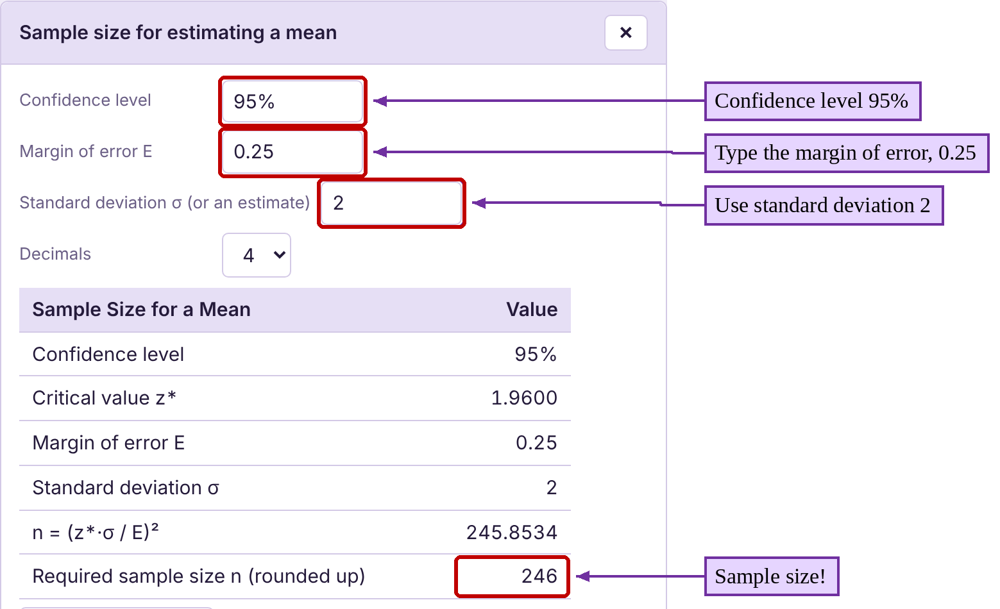
Figure 9.20: Finding the required sample size for 95% confidence intervals with margin of error 0.25.
In this case, STATBELT gives the sample size n = 246 as the number we need to have a margin of error less than 0.25 hours.
If you use the sample size formula, for a 95% CI, we use . The standard deviation is , and the largest error we can tolerate is .
In this case we would need to obtain data from at least 246 individuals to have a margin of error less than 0.25 hours. This is the same result STATBELT gave, because STATBELT uses this formula with z = 1.96. Some technologies use the t-distribution instead, adjusting the degrees of freedom as they compute the minimum sample size; they give a slightly larger answer (249 here), because the t-distribution has slightly wider tails. In either case, the researchers will probably try to obtain more than 250 low income, 250 middle income, and 250 high income Americans to participate in their study.
Photo by Rehina Sultanova (opens in a new tab) on Unsplash (opens in a new tab)